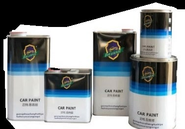

Use
The finish must suit normal bedside use and the teacher-approved project requirements.
Industrial Technology – Timber
Weeks 15–16: Timber finishing, chemical safety and sustainability

Your work
Your entries save automatically in this browser. Use Print / Save PDF before leaving the page.
Two-week roadmap
Apply the teacher-approved finish system safely, patiently and with responsible material use. Apply the procedures and checks to the actual bedside-table project before irreversible work continues.
Theory 1
The finish system is selected and approved by the teacher for the project, timber, workshop and available controls. Students follow that system rather than choosing a product from appearance alone.
Read before opening. Check the exact product label, supplied instructions and current Safety Data Sheet. Confirm surface preparation, application method, required controls, handling between stages and the conditions for drying and curing.
Test where appropriate. A matching offcut can reveal colour, grain response, absorption and application behaviour without risking the table. The test must use the same preparation and approved system; a roughly sanded scrap does not predict the finished result reliably.
Prepare the area and project. Use the designated clean finishing area, remove dust, plan a safe holding position and organise only the approved amount of material and equipment. Make sure the top, tapered legs and curved apron can be reached without touching wet surfaces.
The finish must suit normal bedside use and the teacher-approved project requirements.
It should reveal the timber evenly without highlighting avoidable scratches or glue patches.
Ventilation, ignition control, PPE and waste handling must match the exact product.
The completed surface should be practical to clean and care for as directed.
Theory 2
Apply only the teacher-approved finish system and follow the product instructions provided in the workshop. Before starting, prepare a clean, well-ventilated and dust-free area so loose particles do not settle into the surface. Check that the bedside table is fully sanded, clean and free from pencil marks, glue residue and handling dirt.
Where appropriate, test the finish on a matching offcut to confirm the appearance and application method. Apply the finish evenly with the grain, maintaining a controlled amount of product on the applicator. Work methodically across the thick top, tapered legs, rails and curved front apron.
Check edges, corners and undersides for missed areas, and watch vertical surfaces closely for runs or build-up. Between coats, handle the table only as instructed, keep hands clean and avoid placing it on surfaces that may mark the finish. Complete any approved preparation before recoating.
Allow each stage to dry and cure patiently, because early handling can damage an otherwise successful finish.
Plan a route that avoids leaning across wet surfaces. Complete manageable areas with the grain and maintain a wet edge only as directed by the product system.
Runs often form on tapered legs, apron edges and undersides. Use good light and check from several angles before leaving the coat to dry.

Theory 3
Drying and curing are not the same. A surface may feel dry enough to touch while the finish is still developing hardness, adhesion and resistance underneath.
Protect the surface between stages. Leave the table in the teacher-approved location with suitable ventilation and protection from dust, contact and unauthorised movement. Do not stack objects on the top, test the drawer repeatedly or wrap the project while the finish is vulnerable.
Handle only as directed. Use clean hands or approved supports and lift from areas that will not mark the coating. Follow the product instructions for any between-stage preparation. Do not sand, de-nib or recoat because the surface “looks ready”.
Be patient at the end. Full cure may take longer than the lesson sequence. The table should not be placed into normal service until the teacher confirms the finish has reached the required stage.
Theory 4
Before applying the approved timber finish, read the supplied product label and Safety Data Sheet (SDS) so you understand the hazards, required controls and emergency information. Work only in the teacher-approved finishing area with suitable ventilation, and wear the approved personal protective equipment identified for the product and task. Keep the finish away from flames, sparks, hot surfaces and other ignition sources.
Avoid skin and eye contact by handling containers, applicators and the bedside table carefully, especially when coating the thick top, tapered legs and curved front apron. Keep containers closed when not in use, use only the amount needed, and return materials to the approved storage location after the lesson. Never mix, transfer or dispose of finishing materials unless directed by the teacher.
Report any spill immediately and follow the teacher’s instructions rather than attempting an unapproved clean-up. Used rags must be placed in the designated safe container because residue may create a fire risk if rags are left folded, piled or discarded incorrectly.

Identifies the exact product, hazards, precautions and required instructions.

Use only the type directed by the label, SDS and workshop procedure.

General workshop gloves are not automatically resistant to a finishing product.
Keep flames, sparks, hot surfaces and unauthorised people away from the area.
Theory 5
The label provides immediate product information; the Safety Data Sheet provides detailed hazard, first-aid, exposure-control, storage and spill information. Both relate to the exact product being used.
Use the relevant sections. Check hazard identification, first-aid measures, accidental release, handling and storage, and exposure controls or personal protection. The teacher and school procedure determine how this information is applied in the workshop.
Use stronger controls first. Where possible, use the teacher-approved lower-risk system, designated finishing area, local exhaust or other engineering control. Administrative controls include training, supervision, access limits and safe procedures. PPE provides a final personal layer and must match the product.
Do not improvise during an incident. Alert the teacher, keep others away and follow the spill or exposure procedure. Do not mix products, transfer them into unlabelled containers or attempt an unapproved clean-up.

Theory 6
Sustainable practice during finishing and final work means using materials carefully while still achieving a safe, durable and high-quality bedside table. Before applying the approved finish, plan the quantity needed for the thick top, tapered legs, rails and curved front apron so excess material is not prepared or wasted. Keep useful offcuts clean, dry and protected, as they may be suitable for testing the finish, supporting parts or future workshop projects.
Careful inspection and patient workmanship reduce unnecessary sanding, repeated coating and rework, which saves time, abrasives, finish and timber. Apply only the amount of approved finish required by the product instructions and teacher guidance, rather than assuming that more will improve the result. Dispose of dust, used application materials, containers and other waste according to workshop instructions, because different materials may require different handling.
Final decisions should balance appearance and accuracy with safety, cost and environmental impact. A well-made slim tapered-leg table should meet the brief without consuming more resources than necessary.
Guided practice
Each incorrect option explains the misunderstanding. Use the hint, return to the theory and keep trying until the question is mastered.
Apply your learning
Write a genuine first attempt, check the live guidance, compare with the model and improve your explanation before self-assessing.
Finish the two-week block
Your answers save in this browser as you work, but browser storage is not the official submission. Save the completed page as a PDF before closing it.
No marks, answers or personal information are sent from this webpage.